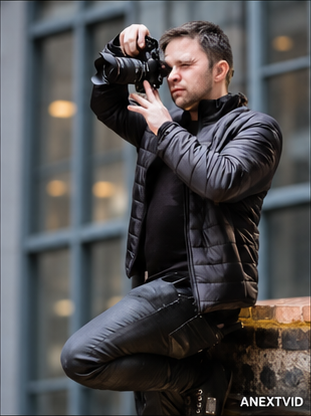
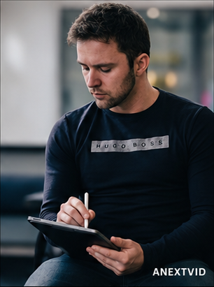
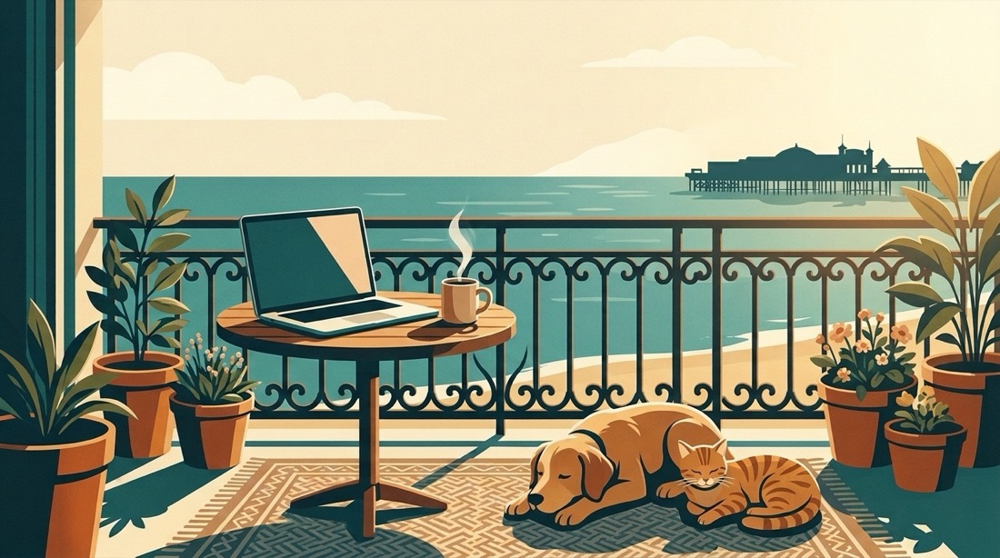
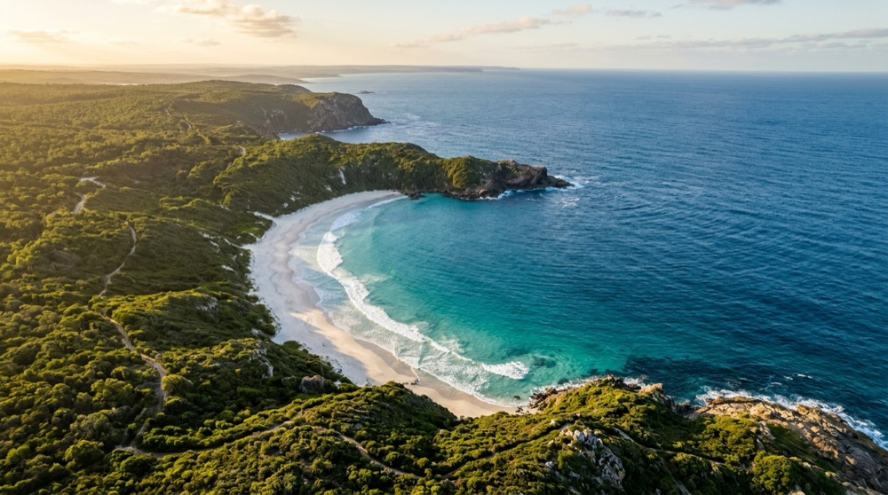
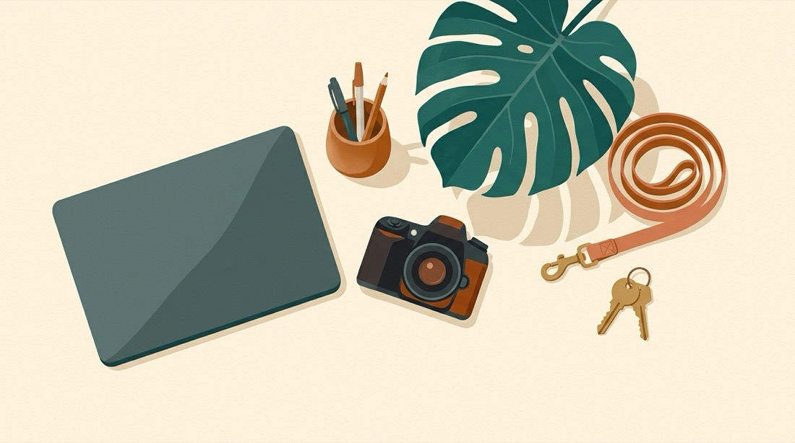
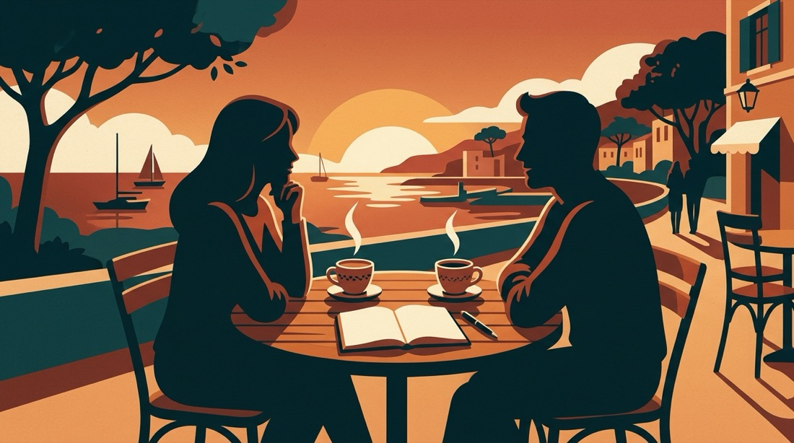
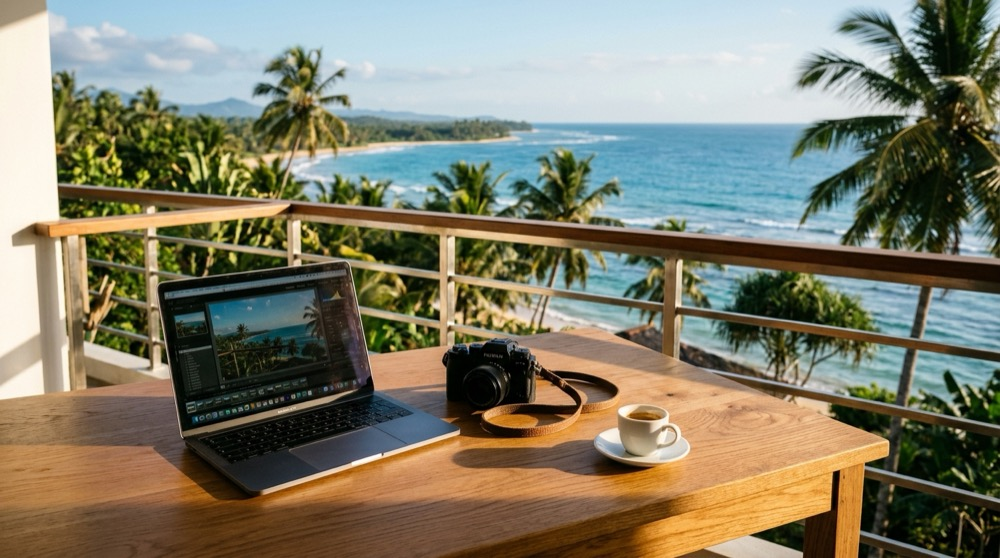

One Carry-On. 13 Countries. Your Home & Pets in Safe Hands.
I'm Jahronimo (36) — quiet UK remote worker, video & web creator, and reliable house/pet sitter.
How we can work together: Open to house & pet sitting, paid video/web gigs, fair-rate stays, and local collabs across Spain (Málaga, Valencia), Thailand, Bali & 13 countries in 2027.
A quick look at who you're hosting


📸 View All 16 Media Kit Photos







2D & 3D Travel Map · Connected from Brighton
Countdown to Next Locations

About Me & Trust Snapshot
Remote worker, non-smoker, pet-friendly, carry-on only

- Based in Brighton, UK (36): Native English speaker, learning Spanish (beginner–intermediate)
- Remote Work: Video production & web development — home during the day with pets
- Lifestyle: Non-smoker, tidy, quiet, regular gym-goer, ultra-light carry-on only
- Verification: UK passport, dog & cat friendly, 5-minute WhatsApp or FaceTime video call anytime
I'm Jahronimo, 36, from Brighton on the south coast of England. I work remotely in video production and web development, which means I'm around the house during the day to keep dogs and cats company, take them on walks, and keep an eye on your place.
Outside of computer work I'm pretty low-key—I go to the gym, read near the sea or a pool, and enjoy exploring local spots at a slow pace. I don't smoke, I keep shared spaces clean, and I'm always respectful of people's homes, gardens, and boats.

Routes & Destinations
Brighton · Málaga · Valencia · Thailand · Bali

I'm starting from Brighton and heading to Spain first—Málaga and Valencia—because I'm learning Spanish and want to spend real time in walkable, coastal cities before moving on through Portugal, Morocco, Thailand, Bali, and Vietnam.
Since I travel light with just a laptop and carry-on, my dates are flexible. Whether it's a house sit, a fair-rate room, or paid video and web work along the route, I'm open to finding good ways to make each stop work.

What I Enjoy & How I Help
Pet care, house upkeep, video production & web dev

What I Enjoy
- Slow travel & exploring local neighbourhoods
- Coastal walks, hiking & reading near the water
- Regular gym routine (fit, active & early riser)
- Local food, photography & video storytelling
- Language exchange (native English · learning Spanish)
Practical Skills
- Dog & cat care (daily walks, feeding, meds, company)
- Garden, plant watering & pool upkeep
- Remote-work reliability (quiet, tidy, zero parties)
- Promo video, reels, photo & web dev for hostels/camps
- Galley/cooking & watch-keeping support for boats
My background is in video production, web development, and digital automation, so I'm comfortable shooting and editing reels, fixing websites, or helping a local business get online. On the practical side, I'm fit, reliable, and genuinely enjoy looking after dogs, cats, gardens, and pools.
I'm looking for straightforward arrangements where everyone wins—whether that's paid freelance work, a skill-for-stay swap at a hostel or retreat, or looking after someone's home while they're away.
2027 MISSION · PRESS TO EXPAND
2027 Goals · 13 Different Countries
Slow travel milestones, skill swaps & 13-country map tracker
13
COUNTRIES
The big goal for 2027 is simple: visit 13 different countries without rushing through airports just to tick boxes. I want to stay long enough in each place—especially Spain, Thailand, and Bali—to get into a real routine, hit the gym, do good creative work, and actually get to know the area.
Along the way I'm building up my Spanish to a confident conversational level and stacking solid projects and 5-star host references in every country I visit.

People I Met Along the Way
Hosts, fellow travellers & stories from the road

Half the reason I'm doing this trip is the people you cross paths with—whether that's homeowners, hostel founders, fellow remote workers, or locals up for a coffee and language exchange.
As I move through Spain, Thailand, Bali, and the rest of the 13 countries, I'll be adding people I've met and collaborated with here. If you want to join the story, just message me on WhatsApp.

Email Me Directly
jahronimo1@hotmail.com

- Direct Email: jahronimo1@hotmail.com
- Best For: House-sit dates, video/web briefs, fair-rate stays & longer intros
- Video Call Ready: Happy to jump on a 5-minute WhatsApp or FaceTime call first
If you prefer email over WhatsApp, drop me a quick note with your city, dates, and what you're looking for—whether that's someone to look after your place and pets, shoot a promo video, or collaborate on a website.
I check my inbox daily and I'm always glad to hop on a quick 5-minute video call so we can meet properly before making any plans.
Quick Answers (FAQ)
Availability, pet care, skill swaps & video calls
I'm easygoing and flexible—I don't hold a UK driving licence right now, so I prioritize walkable neighborhoods and places with decent public transit and reliable Wi-Fi.
Whether you're a homeowner looking for a quiet, trustworthy sitter in Brighton, Málaga, Valencia, Thailand, or Bali, or a business needing fresh video and web work, just message me on WhatsApp and we'll figure out what works.
Join the Story · Message My WhatsApp
Pick a topic or type your own message—opens directly in WhatsApp.